グランディ羽鳥湖スキーリゾート
| 日付 | 2019年1月26日（土） - 2019年1月27日（日） |
|---|---|
| メンバー | 家族（妻、長女・7歳、長男・5歳） |
| アクセス | 車 |
昨年に引き続きグランディ羽鳥湖スキーリゾートに行く。
滑りやすいコースが多く、比較的空いているスキー場だ。
昨年は3月の気温が高い時期に行き、雪質がいまいちだったため
今回は1月に行ってみることにする。
1日目
高速道路インターからスキー場までの道のりは長い。
ちょうど寒波が来ていて、路面は凍結している。
途中で山道を走るが、スノータイヤは驚くほど滑らない。
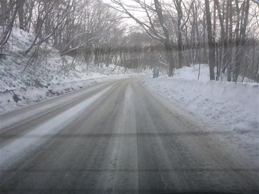
今回はスキー場併設のホテルに宿泊予定。
荷物を置いて着替えを済ませれば準備OKだ。
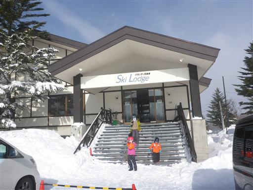
青空は出ているが、雪がちらついている。
日本海側は大雪、太平洋側は晴れの予報だが、
その中間地点に位置するこの場所は微妙な天候だ。
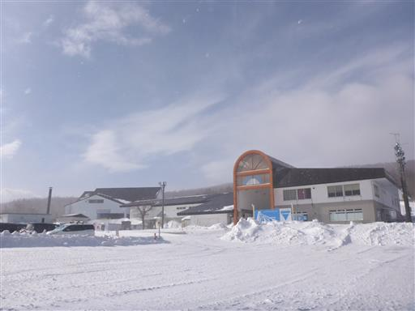
ゲレンデに移動。さらさらの雪だ。
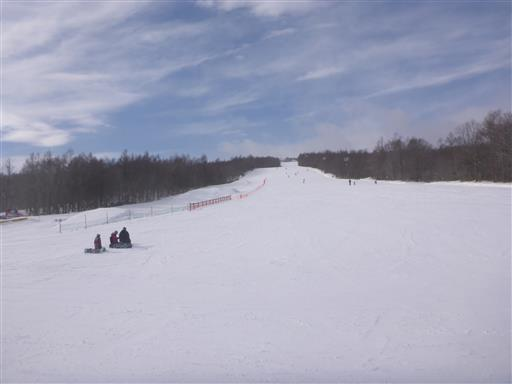
スキー板をレンタルしてスキー開始。
ほぼ1年振りのためか、息子も娘もこけまくっている。
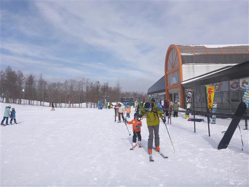
3本滑ったら昼食タイム。このスキー場はレストランのクオリティが高い。
毎年工夫しているようだ。
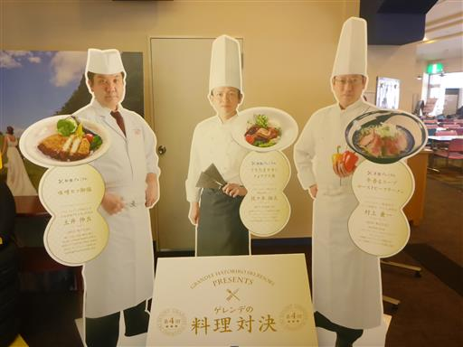
午後は子供たちをスクールに入れて自由に滑る。
吹雪になってきて視界が悪くなる。
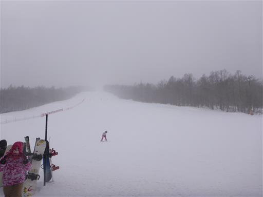
午後は16時まで滑り、ホテルに移動。
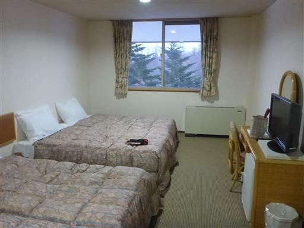
2日目
本日も天気が悪い。朝から除雪車が働いている。
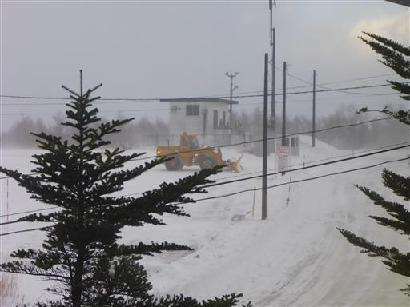
まずは腹ごしらえ。
このホテルは夕食はメインディッシュ以外バイキング、朝食もバイキングなのだが、
どれも全体的においしかった。
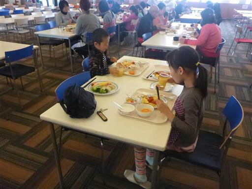
2日目になるとだいぶ慣れてくる。
平地の移動もストックで押して前に進むようになる。
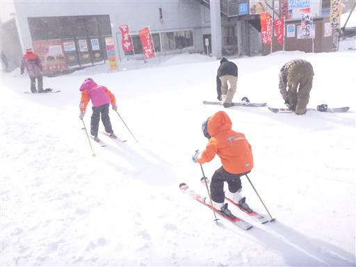
息子はすぐに直滑降になってしまうため、ゆっくりと滑って曲がる練習を繰り返す。
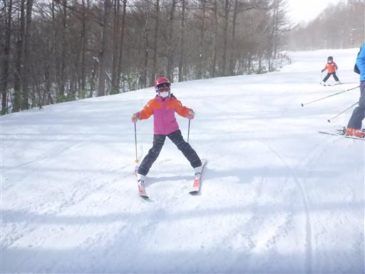
昨年と比べてあまり上達は見られなかったが、子供達はそれなりに楽しかったようだ。
ただ寒かったのが嫌だったようで、雪質を重視するか、快適な気温を重視するか
今後悩ましい選択になりそうだ。
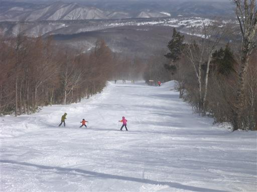
他の記録